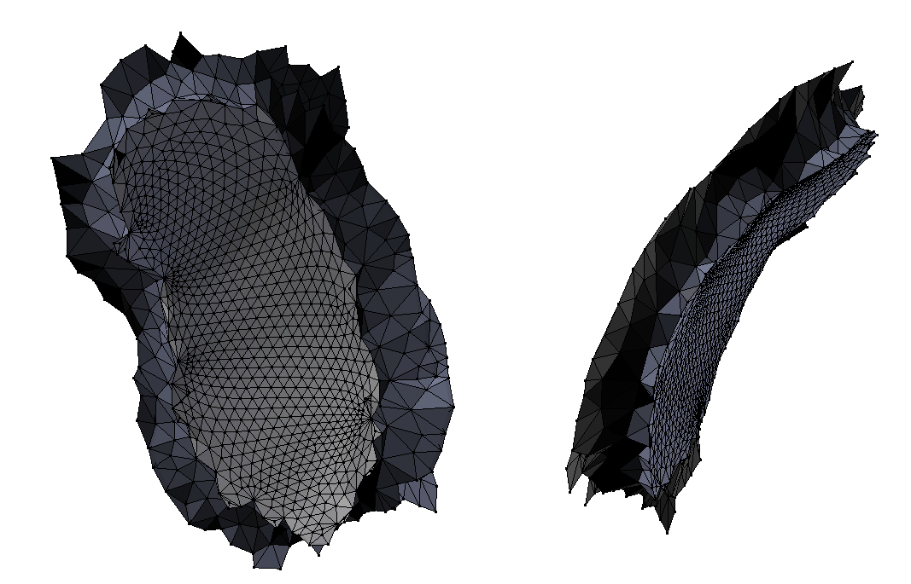
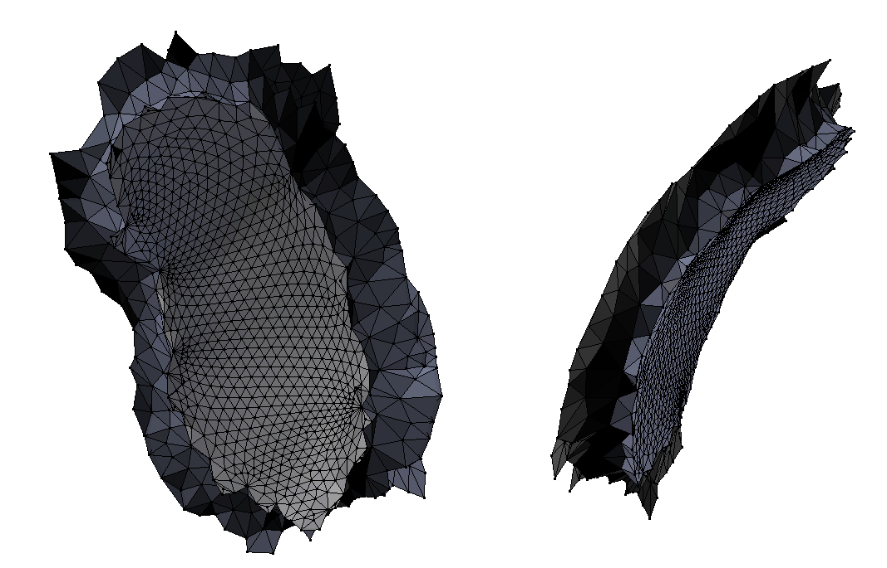
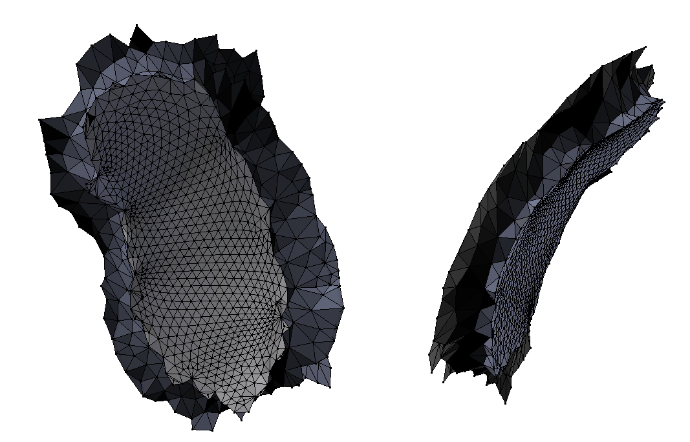

I graduated from NUS and
Télécom Paris in 2020.
After graduation, I worked at
CEA Paris-Saclay
on polycube mapping, and later joined Prof. Olga Sorkine-Hornung's
lab at ETH Zürich as a visiting researcher on garment fabrication. Since 2023, I am supervised by Prof. Pascal Fua at EPFL's CVLab, where I am working on 3D Computer Vision.
For those who are unsure, here's how my name is pronounced in French.
Research
My research interests lie at the intersection of computer vision and computer graphics.
I am dedicated to advancing machine perception through 3D scene reconstruction and understanding, enabling machines to not
only see their environment but also comprehend and interact with it. My work also emphasizes 3D content creation for digital
AR/VR environments, leveraging both real-world reconstruction and AI-assisted 3D generation.
⟶ Students interested in a semester project or master thesis, please consult our lab's project page.
⟶ Master/Bachelor summer interns, please apply to the Summer@EPFL program.
⟶PhD applicants, please refer to the doctoral program page or our
student-wiki.
Feel free to contact me! Please make it clear you have had a look at these resourses and avoid sending a generic email.
Reviewer for major Vision (CVPR, BMVC) and Graphics (SIGGRAPH, CGF, PG) conferences.
Head Teaching Assitant for:
CS433 Machine Learning (600 students, 30 teaching assistants) taught by Prof. M. Jaggi and N. Flammarion (2023, 2024)
CS442 Computer Vision (200 students, 9 teaching assistants) with Prof. Pascal Fua (2023, 2024)
Associations:
I am the VP/Treasurer of EPIC, the association of CS PhDs of EPFL. We are building a community of PhDs across the department, brought together by BBQs, board game nights, and more.
Additional workshop presentations without proceedings
My favorite creations from back when I was a student, most of these projects are from before 2020.
B-Mesh Modeller
With two friends from Télécom Paris, we created a 3D modelling software based on a novel approach described in
a research paper.
The idea is to create an initial mesh in only a few minutes by placing spheres in 3D to represent the skeleton of the modelled object.
The user can freely create and customize the mesh, and it can be modified in real-time. (link to the project)
Aesthetic functions
This is a fun little project to explore the artistic side of two-dimensional functions. All you have to do is enter a math function and play with the sliders to generate some stunning artworks. Any function works, no matter how complex, but even on simpler ones the results are often surprising. (link to the project)
Black hole of odd dimension
Sea floor
Color dance
Miracle of Life
And some of them move, too! There's plenty more
where these come from,
some moving here,
some surprising there,
and they all have something that all the others don't have.
I always love receiving creations from other people, so feel free to send me an email
if you find inspiration!
Cow Texture generator
Ever felt the need to have an infinite supply of cow pattern textures?
This project was inspired by The leopard never
changes
its spots, a SIGGRAPH 2020 paper by Malheiros, Marcelo de G. and Fensterseifer, Henrique and Walter,
Marcelo. This paper uses a reaction-diffusion model to approximate
tissue growth, and successfully generates a few 2D patterns matching real species. This project aims to adapt
this model to generate cow patterns, which were not covered in the original article.
(link to the project)
Evaluation of a Spectral Data Transformation Method for Meaningful Mesh Segmentation
I wanted to see if I could transform a 3D mesh in a weaningful way to make 3D segmentation easier.
To evaluate this transformation, I used
this awesome dataset which includes human-generated ground truth segmentations, and used simple clustering algorithms to generate a segmentation. By comparing results with the ground truth, I
was able to measure the efficiency of this approach and identify the circumstances under which it's useful. For more detail, here is
a link to the complete study.
You can also take a look at
the project on github.
Potato Generator
Simple project that generates a 3D potatoïd based on input parameters. Perturbations with a given frequency, amplitude and direction are applied to a sphere to create the illusion of a natural object.
(link to the project)
Design of Implants for Skull Reconstructive Surgery
This project aims to make 3D skull implant generation as easy as possible. The idea is to input a mesh derived from a CT scan and use two edge loops to specify the part of the skull where an implant should be generated. The skull layer is then reconstructed to
make a perfect-fit implant. Then, a flattening algorithm is used to flatten each layer of the implant to make it suitable for implant 3D printing.
Cutting path are added to release some flattening constraints. This work was done for the National University of Singapore in collaboration with
Osteopore,
and uses a patented software from NUS to reconstruct the outer layer of the skull using symmetry constraints.

[FRENCH] Modélisation agricole et optimisation de la répartition des surfaces
Here's a video I made when I was 19 showing the different steps in my research trying to optimize the area allocation of an agricultural exploitation. It's in French and quite simple since this was done very early during my studies, but if you have any questions I'd be more than willing to speak about it with you. It was a fun experience and I enjoyed the freedom that I was given on this project.


 
